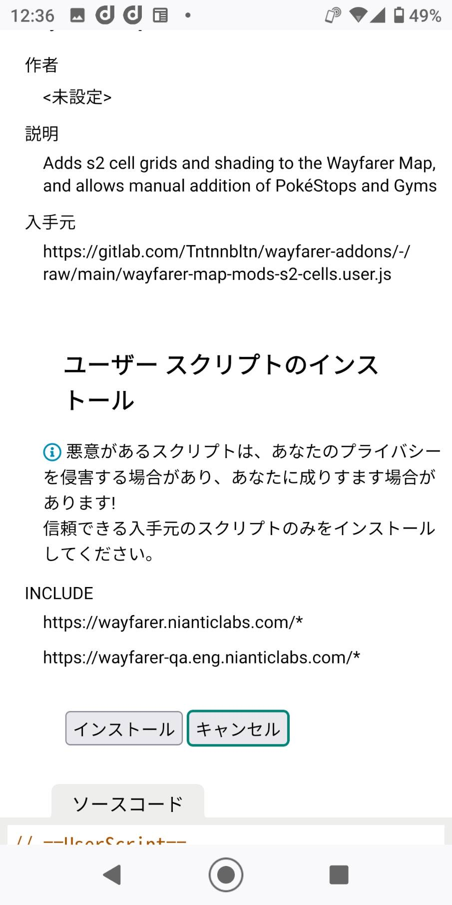

🧭 Campsite Design Tool
スクリプト導入
使っている端末を選ぶと、その端末に必要な手順だけを表示します。上から順番に進めてください。
現在は Wayfarer Map Mods 1本だけ導入すればOKです。
旧手順の「Base」「S2 Cells」を別々にインストールする必要はありません。
旧手順の「Base」「S2 Cells」を別々にインストールする必要はありません。
使っている端末を選択
端末を選ぶと、下に導入手順が表示されます。
↓
PC STEP 2
Chromeの拡張機能設定を確認
- Chrome右上の「︙」を押す
- 「拡張機能」→「拡張機能を管理」
- 「デベロッパーモード」をON
- Tampermonkeyの「詳細」を開く
- 「ユーザースクリプトを許可する」をON
↓
↓
PC STEP 4
Wayfarer Mapで確認
ChromeでWayfarer Mapを開き、Wayfarer Map Modsの機能が表示されれば導入完了です。
ChromeでWayfarer Mapを開く↓
iPhone STEP 2
Safariの機能拡張をON
- Safariを開く
- Safariのメニューを開く
- 「機能拡張を管理」を押す
- 「Userscripts」をON
↓
iPhone STEP 3
Wayfarer Map Modsをインストール
下のボタンをSafariで開き、Safariのメニューから「Userscripts」→「Tap to Install」の順に押してください。
Wayfarer Map Modsをインストール↓
iPhone STEP 4
Wayfarer Mapで確認
SafariでWayfarer Mapを開き、Wayfarer Map Modsの機能が表示されれば導入完了です。
SafariでWayfarer Mapを開く↓
📱 ここから先はFirefoxで操作します
STEP 2以降は、Firefoxアプリ側で操作してください。
このマニュアルを参照しながら、マニュアルとFirefoxを行き来して進めてください。
このマニュアルを参照しながら、マニュアルとFirefoxを行き来して進めてください。
↓
Android STEP 2
TampermonkeyをFirefoxに追加
Firefoxアプリを開き、アドレス欄に以下のURLをコピーして貼り付けて開いてください。ページが開いたら「Firefoxへ追加」→「追加」の順に押してください。
https://addons.mozilla.org/ja/firefox/addon/tampermonkey/
ℹ️ Tampermonkey追加後に案内ページが開いても、そのページでは操作不要です。このマニュアルへ戻って次のSTEPへ進んでください。
「追加」が表示されない場合
Firefoxを一度終了して開き直し、同じURLをもう一度開いてください。
↓
Android STEP 3
Wayfarer Map Modsを開く
Firefoxアプリのアドレス欄に、以下のURLをコピーして貼り付けて開いてください。
https://gitlab.com/Tntnnbltn/wayfarer-map-mods/-/raw/main/dist/wayfarer-map-mods.user.js
もし空白ページが出たら
Discordなどの外部アプリから直接開いている可能性があります。Firefoxアプリを開き、上のURLをコピーしてアドレス欄に貼り付けてください。
Discordなどの外部アプリから直接開いている可能性があります。Firefoxアプリを開き、上のURLをコピーしてアドレス欄に貼り付けてください。
↓
Android STEP 4
表示された画面でインストール
前のSTEPでインストール画面が表示されたら、画面内の「インストール」を押してください。
⚠️ 注意文が表示される場合があります。今回案内しているURLから開いた場合は、内容を確認して「インストール」を押して進んでください。
この画面が表示されても問題ありません

↓
Android STEP 5
Wayfarer Mapで確認
FirefoxでWayfarer Mapを開き、Wayfarer Map Modsの機能が表示されれば導入完了です。
✅ ここまでできたらスクリプト導入は完了です。
FirefoxでWayfarer Mapを開く
次にやること
スクリプト導入が完了したら、Wayfarer MapからPOIを抽出します。
📍 POI一括抽出マニュアルを開く